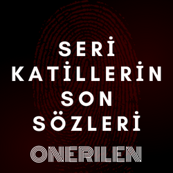
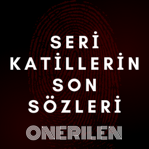
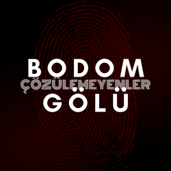
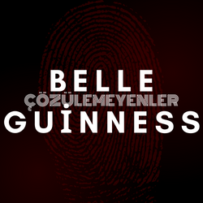
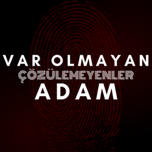

|  |
1960 yılında iki genç çift Finlandiya'da bulunan Bodom Gölü'nde kamp yapmaya gitmiş. Sabah olduğunda bu gençlerin üçünün vahşice öldürüldüğü, dördüncüsünün ise yaralı olduğu tespit edilmiş. Kurtulan kişinin anlattığına göre; siyah ve parlak kırmızı giyimli bir adam, yakınlardaki kuş gözlemcileri ise uzun sarı saçlı bir adam gördüklerini söylemiş. Sağ kalan bu kişi daha iyi hatırlayabilmek için hipnotize edilmiş ve çizilen robot resim kabul edilmemiştir. Ancak bu resimdekine benzeyen bir adam kurbanların cenazesinde çekilen bir fotoğrafta görülmüştür. |
 |
Seri katil Belle Guinness, düzinelerce insanı öldürüp arka bahçesine gömmüş. İçinde kendisinin de olduğu tahmin edilen evi yanmış ve birisi kafasız olmak üzere dört tane ceset bulunmuş. Diğer üç cesedin kendi çocukları olduğu tespit edilmiş ancak kafasız olan dördüncü cesedin kim olduğu tespit edilememiş. Çoğu insan Guinness'in ölümünün sahte olduğunu ya da kaçtığını düşünüyor. |
|---|
|  |
1945 yılının başlarında, Boston'da bir hastane, şarapnel yaraları gibi ciddi sorunları ve üzerinde gemici ve adının Charles A. Jamison olduğu, Cutty Sark isimli bir gemide çalıştığı, 49 yaşında ve Amerikalı bir Katolik gibi bilgilerin yazılı olduğu bir kart bulunan bu hastayı kabul etmiş. Yoğun bir tedaviden sonra Jamison yavaşça konuşabilecek duruma gelmiş ancak hafıza kaybı olduğu tespit edilmiş. Verdiği az miktardaki bilgi ise kayıtlarda bulunamamış. Amerikan kayıtlarında bu isimde ya da benzer isimde bir adam kayıtlı değilmiş. Hastanın parmak izleri ve fotoğrafları orduda kayıtlı değilmiş ve Cutty Sark isimli bir gemi de Amerikan ordusu listesinde yokmuş. Aynı isimde bir gemi daha önce İngiliz Donanması tarafından kullanılmış ancak oradaki kayıtlarda da bu adam ile ilgili hiçbir şey bulunamamış. |
1970 yılında Norveç'te Buz Vadisi'nde yanarak ölmüş bir kadın bulunmuş. Bu kadının kişisel eşyaları, kozmetik malzemeleri, perukları ve şifrelenmiş notları bir tren istasyonunda bulunmuş. Polis, bu kadının birden fazla sahte pasaporta Norveç'te çeşitli otellerde kaldığını tespit etmiş. Kadının kim olduğu asla tespit edilememiş ancak birçok insan Soğuk Savaş ile ilgili bir casus olduğuna inanıyor. |
|---|